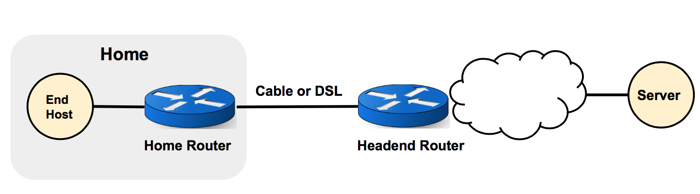
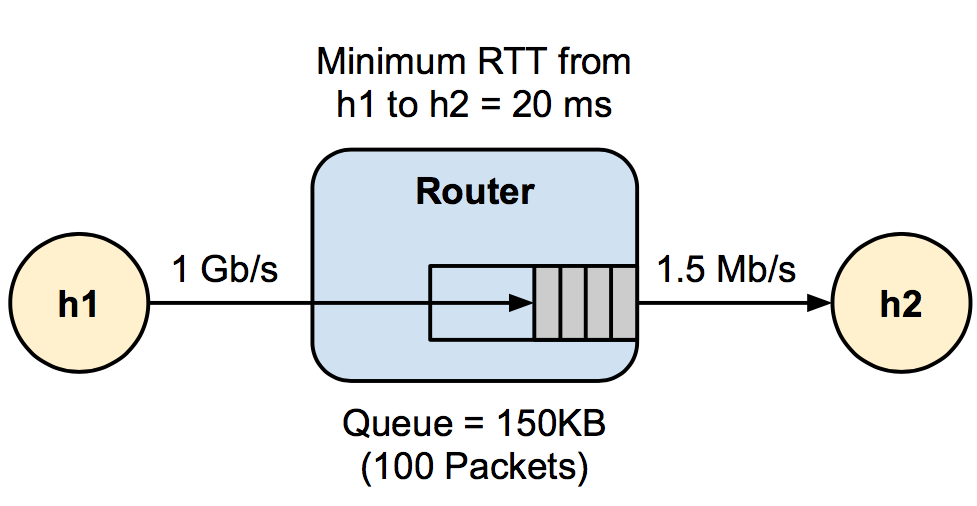

In this assignment, you will study the dynamics of TCP, and more specifically bufferbloat, a problem caused by large buffers leading to poor network performance. You will use a tool called Mininet to emulate a simple network, and configure it such that it can produce the bufferbloat problem. You will collect various statistics from the network with and without bufferbloat, and use your measurement data to reason about the differences. This assignment gives you a chance to experiment with the dynamic of TCP and learn about bufferbloat. You will also learn how to use Mininet, which is a very useful simulation tool for network experiments.
Bufferbloat is a phenomenon that happens when a switching devices is configured to use excessively large buffers, which can in turn cause high latency and packet delay variation (jitter). This can happen in a typical home network like the following:  Here, the end host in the Home network is connected to the home router. The home router is then connected, via cable or DSL, to a headend router at the access Internet provider's office. By simulating and experimenting with this part of the home network in Mininet, you will learn how long router buffers can lead to poor network performance.
Mininet is a network emulator with which you can create a custom network of virtual hosts, switches, controllers, and links, all on a single linux machine. The virtual devices in the emulated network can run real programs; anything that can run on linux can run on a Mininet device too. This makes Mininet a valuable tool for fast and easy simulation of network protcols and measurements. The Mininet website has a lot of useful resource on how to get started with Mininet.
To start, you should first create the following network using Mininet's Python API, which emulates a typical home netowrk:  Here h1 is your home computer that has a fast connection (1Gb/s) to your home router. The home router has a slow uplink connection (1.5Mb/s). The round-trip propagation delay, or the minimum RTT between h1 and h2 is 20ms. The router buffer size can hold 100 full sized ethernet frames (about 150KB with an MTU of 1500 bytes).
To create a custom topology in Mininet, we extend the mininet.topo.Topo class. We have already added the switch (the router) to topology for you. You need to add h1 and h2, and also the links with appropriate characteristic to create the setting specified in the image above (Note that you may need to change the constructor to pass special parameters to the topology):
from mininet.topo import Topo
class BBTopo(Topo):
"Simple topology for bufferbloat experiment."
def __init__(self):
super(BBTopo, self).__init__()
# Here we have created a switch. If you change its name, its
# interface names will change from s0-eth1 to newname-eth1.
self.addSwitch('s0')
# TODO: create two hosts
# TODO: Add links with appropriate characteristics
return
Next, we need a couple of helper functions to generate traffic between the two hosts. The following function starts a long-lived TCP flow which sends data from h1 to h2 using iperf. It receives one argument called net, which is an instance of mininet with a BBTopo topology that we have created above. We have written the part for the server (h2). Complete the function to also start iperf on the client (h1):
def start_iperf(net):
h2 = net.getNodeByName('h2')
print "Starting iperf server..."
# For those who are curious about the -w 16m parameter, it ensures
# that the TCP flow is not receiver window limited. If it is,
# there is a chance that the router buffer may not get filled up.
server = h2.popen("iperf -s -w 16m")
# TODO: Start the iperf client on h1. Ensure that you create a
# long lived TCP flow.
Next, we want to start a back-to-back ping train from h1 to h2 10 times a second and record the RTTs. Complete the following function to start the pings (net is an instance of mininet with a BBTopo topology):
def start_ping(net):
# TODO: Start a ping train from h1 to h2 (or h2 to h1, does it
# matter?) Measure RTTs every 0.1 second. Read the ping man page
# to see how to do this.
# Hint: Use host.popen(cmd, shell=True). If you pass shell=True
# to popen, you can redirect cmd's output using shell syntax.
# i.e. ping ... > /path/to/ping.
pass
Next, we develop some helper functions to probe the congestion window of the TCP traffic. This way, we can look at the dynamic of a TCP connection. The functions are already complete, but feel free to experiment with them:
def start_tcpprobe(outfile="cwnd.txt"):
os.system("rmmod tcp_probe; modprobe tcp_probe full=1;")
Popen("cat /proc/net/tcpprobe > %s" % outfile,
shell=True)
def stop_tcpprobe():
Popen("killall -9 cat", shell=True).wait()
Following is a helper function that monitors the queue length on a given interface and interval:
from monitor import monitor_qlen
def start_qmon(iface, interval_sec=0.1, outfile="q.txt"):
monitor = Process(target=monitor_qlen,
args=(iface, interval_sec, outfile))
monitor.start()
return monitor
Finally, here is a helper function that starts a webserver on h1 (you will see shortly why we need the webserver):
from time import sleep
def start_webserver(net):
h1 = net.getNodeByName('h1')
proc = h1.popen("python http/webserver.py", shell=True)
sleep(1)
return [proc]
Now, we need to put together all the pieces to create the network, start all the traffic, and make the measurements. More specifically, the bufferbloat function should:
Note that the long lived flow, ping train, and webserver downloads should all be happening simultaneously. Once you have completed the assignment steps up until here, complete the bufferbloat function below to do all the steps described above. We highly recommand that you parametrize your code in terms of the queue length, link delay, experiment time, output directories and files, etc so that you can experiment with differnet parameters easily. You can use the **kwargs to pass in any parameter you need to the bufferbloat function:
from mininet.node import CPULimitedHost, OVSController
from mininet.link import TCLink
from mininet.net import Mininet
from mininet.log import lg, info
from mininet.util import dumpNodeConnections
from time import time
import os
from subprocess import call
def bufferbloat(**kwargs):
# Linux uses CUBIC-TCP by default that doesn't have the usual sawtooth
# behaviour. For those who are curious, replace reno with cubic
# see what happens...
# sysctl -a | grep cong should list some interesting parameters.
os.system("sysctl -w net.ipv4.tcp_congestion_control=reno")
# create the topology and network
topo = BBTopo()
net = Mininet(topo=topo, host=CPULimitedHost, link=TCLink,
controller= OVSController)
net.start()
# This dumps the topology and how nodes are interconnected through
# links.
dumpNodeConnections(net.hosts)
# This performs a basic all pairs ping test.
net.pingAll()
# Start all the monitoring processes
start_tcpprobe("cwnd.txt")
# TODO: Start monitoring the queue sizes. Since the switch I
# created is "s0", I monitor one of the interfaces. Which
# interface? The interface numbering starts with 1 and increases.
# Depending on the order you add links to your network, this
# number may be 1 or 2. Ensure you use the correct number.
# qmon = start_qmon(...)
# TODO: Start iperf, pings, and the webserver.
# start_iperf(net), ...
# TODO: measure the time it takes to complete webpage transfer
# from h1 to h2 (say) 4-5 times. Hint: check what the following
# command does: curl -o /dev/null -s -w %{time_total} google.com
# Now use the curl command to fetch webpage from the webserver you
# spawned on host h1 (not from google!)
# Hint: have a separate function to do this and you may find the
# loop below useful.
exp_time = kwargs['experiment_time']
start_time = time()
while True:
# do the measurement (say) 3 times.
sleep(5)
now = time()
delta = now - start_time
if delta > exp_time:
break
print "%.1fs left..." % (exp_time - delta)
# TODO: compute average (and standard deviation) of the fetch
# times. You don't need to plot them. Just print them
# here and explain your observations in the Questions part
# in Part 2, where you analyze your measurements.
# Stop probing
stop_tcpprobe()
qmon.terminate()
net.stop()
# TODO: Ensure that all processes you create within Mininet are killed.
# Sometimes they require manual killing.
Popen("pgrep -f webserver.py | xargs kill -9", shell=True).wait()
Once you have completed all the steps above, use your bufferbloat function to run the experiment, once with queue size of a 100 packets and then queue size of 20 packets. Make sure to run the experiments long enough (on the order of a few minutes) to see the dynamics of TCP, like the sawtooth behavior, in your results.
When testing and experimenting with your code, make sure to kill all the process you are creating within mininet manually if your code ran into exceptions and did not do the clean up for you. Moreover, if mininet was not exited normally, make sure to do the clean up for mininet too. This can be done using "mn -c" executed as root.
# TODO: run the experiments once with queue size of 100 packets, and once with 20.
call(["mn", "-c"])
# bufferbloat(appropriate arguments)
# bufferbloat(appropriate arguments)
In this part of the assignment, you should first analyze your measurements with different queue sizes by plotting the variations in congestion window, queue length, and ping RTT versus time. Then, you should try to answer some questions about TCP and bufferbloat using your observations and the plots.
The following script contains functions for plotting the congestion window measurements. The plot_congestion_window takes in the file containing the outputs of tcpprobe from your experiment and makes a plot.
%matplotlib inline
from helper import *
from collections import defaultdict
IPERF_PORT = '5001'
def first(lst):
return map(lambda e: e[0], lst)
def second(lst):
return map(lambda e: e[1], lst)
"""
Sample line:
2.221032535 10.0.0.2:39815 10.0.0.1:5001 32 0x1a2a710c 0x1a2a387c 11 2147483647 14592 85
"""
def parse_file(f):
times = defaultdict(list)
cwnd = defaultdict(list)
srtt = []
for l in open(f).xreadlines():
fields = l.strip().split(' ')
if len(fields) != 11:
break
if fields[2].split(':')[1] != IPERF_PORT:
continue
sport = int(fields[1].split(':')[1])
times[sport].append(float(fields[0]))
c = int(fields[6])
cwnd[sport].append(c * 1480 / 1024.0)
srtt.append(int(fields[-1]))
return times, cwnd
def plot_cwnds(ax, f, events):
times, cwnds = parse_file(f)
for port in sorted(cwnds.keys()):
t = times[port]
cwnd = cwnds[port]
events += zip(t, [port]*len(t), cwnd)
ax.plot(t, cwnd)
events.sort()
def plot_congestion_window(filename, histogram=False):
added = defaultdict(int)
events = []
total_cwnd = 0
cwnd_time = []
min_total_cwnd = 10**10
max_total_cwnd = 0
totalcwnds = []
m.rc('figure', figsize=(16, 6))
fig = plt.figure()
plots = 1
if histogram:
plots = 2
axPlot = fig.add_subplot(1, plots, 1)
plot_cwnds(axPlot, filename, events)
for (t,p,c) in events:
if added[p]:
total_cwnd -= added[p]
total_cwnd += c
cwnd_time.append((t, total_cwnd))
added[p] = c
totalcwnds.append(total_cwnd)
axPlot.plot(first(cwnd_time), second(cwnd_time), lw=2, label="$\sum_i W_i$")
axPlot.grid(True)
#axPlot.legend()
axPlot.set_xlabel("seconds")
axPlot.set_ylabel("cwnd KB")
axPlot.set_title("TCP congestion window (cwnd) timeseries")
if histogram:
axHist = fig.add_subplot(1, 2, 2)
n, bins, patches = axHist.hist(totalcwnds, 50, normed=1, facecolor='green', alpha=0.75)
axHist.set_xlabel("bins (KB)")
axHist.set_ylabel("Fraction")
axHist.set_title("Histogram of sum(cwnd_i)")
plt.show()
Use the above function to create the congestion window plot for queue size of 100 packets:
# TODO: call the plot function with the correct file name
#plot_congestion_window(cwnd_file_path)
Use the above function to create the congestion window plot for queue size of 20 packets:
# TODO: call the plot function with the correct file name
# plot_congestion_window(cwnd_file_path)
The following script contains functions for plotting the queue length measurements. The plot_queue_length takes in the file containing the outputs of queue monitoring from your experiment and makes a plot.
%matplotlib inline
import plot_defaults
from matplotlib.ticker import MaxNLocator
from pylab import figure
def plot_queue_length(f):
to_plot=[]
m.rc('figure', figsize=(16, 6))
fig = figure()
ax = fig.add_subplot(111)
data = read_list(f)
xaxis = map(float, col(0, data))
start_time = xaxis[0]
xaxis = map(lambda x: x - start_time, xaxis)
qlens = map(float, col(1, data))
xaxis = xaxis[::1]
qlens = qlens[::1]
ax.plot(xaxis, qlens, lw=2, color = 'red')
ax.xaxis.set_major_locator(MaxNLocator(4))
plt.ylabel("Packets")
plt.grid(True)
plt.xlabel("Seconds")
plt.show()
Use the above function to create the queue length plot for queue size of 100 packets:
# TODO: call the plot function with the correct file name
# plot_queue_length(qlen_file_path)
Use the above function to create the queue length plot for queue size of 20 packets:
# TODO: call the plot function with the correct file name
# plot_queue_length(qlen_file_path)
The following script contains functions for plotting the ping RTT measurements. The plot_ping_rtt takes in the file containing the outputs of the pings from your experiment, as well as the number of pings you initiated per second, and makes a plot.
%matplotlib inline
def parse_ping(fname):
ret = []
lines = open(fname).readlines()
num = 0
for line in lines:
if 'bytes from' not in line:
continue
try:
rtt = line.split(' ')[-2]
rtt = rtt.split('=')[1]
rtt = float(rtt)
ret.append([num, rtt])
num += 1
except:
break
return ret
def plot_ping_rtt(f, freq=10):
m.rc('figure', figsize=(16, 6))
fig = figure()
ax = fig.add_subplot(111)
data = parse_ping(f)
xaxis = map(float, col(0, data))
start_time = xaxis[0]
xaxis = map(lambda x: (x - start_time) / freq, xaxis)
qlens = map(float, col(1, data))
ax.plot(xaxis, qlens, lw=2)
ax.xaxis.set_major_locator(MaxNLocator(4))
plt.ylabel("RTT (ms)")
plt.grid(True)
plt.show()
Use the above function to create the ping RTT plot for queue size of 100 packets:
# TODO: call the plot function with the correct file name
# plot_ping_rtt(pings_file_path)
Use the above function to create the ping RTT plot for queue size of 20 packets:
# TODO: call the plot function with the correct file name
# plot_ping_rtt(qlen_file_path)
Answer the following questions based on your observations (plots and measurement statistics) from the experiments:
Answer:
! ifconfig eth0
Answer:
Answer:
Answer:
This assignment is modeled after a similar assignment in Stanford university.